Mục tiêu học tập
Học xong Chương 11, bạn cần làm được các việc sau. Nhãn cho biết mục trình bày nội dung đó.
- 11.1Mô tả các quá trình của vòng tuần hoàn nước.
- 11.2Mô tả lưu vực, việc bảo vệ lưu vực và cân bằng nước.
- 11.4Mô tả vì sao có luật về nước, ai quản lý luật đó, và nước được phân chia thế nào ở miền tây Hoa Kỳ.
- 11.5.4Mô tả các đới sinh, vận chuyển và lắng đọng trầm tích, và trạng thái cân bằng của dòng chảy.
- 11.5.5Mô tả các dạng địa hình do dòng chảy tạo ra: các kiểu lòng sông, nón phóng vật, bãi bồi, đê tự nhiên, châu thổ, khúc uốn khoét sâu và thềm sông.
- 11.6Mô tả điều kiện tạo nên một tầng chứa nước tốt, và định nghĩa lớp cách nước và mực nước ngầm.
- 11.7Mô tả ba nhóm chất ô nhiễm nước chính và ba kiểu xử lý ô nhiễm.
- 11.8Mô tả địa hình karst, cách nó hình thành và các dạng địa hình của nó.
Cách dùng đề cương
Các từ gạch chân là thuật ngữ. Bấm vào một từ, hoặc mở Thuật ngữ ở góc dưới bên phải, để đọc và tìm mọi định nghĩa của chương. Chương này đi theo dòng nước: qua vòng tuần hoàn nước (11.1), qua các lưu vực và cân bằng nước (11.2), vào việc sử dụng và luật pháp của con người (11.3–11.4), xuôi theo những dòng sông đào khoét và bồi đắp địa hình (11.5), xuống lòng đất thành nước dưới đất (11.6), đến ô nhiễm và xử lý ô nhiễm (11.7), và cuối cùng hòa tan đá vôi tạo nên karst (11.8).
Mọi sự sống trên Trái Đất đều cần nước. (toàn bộ nước của Trái Đất) cũng là một tác nhân biến đổi địa chất: nước lắng đọng khoáng vật, giúp trầm tích thạch hóa và biến đổi đá sau khi đá hình thành. Nước bị các mảng hút chìm mang xuống gây nóng chảy do bổ sung chất bốc (flux melting) trong lớp phủ, và nước là một trong các chất bốc trong magma thoát ra dưới dạng hơi nước ở núi lửa.
Con người dựa vào nước để uống, làm nông nghiệp, sản xuất năng lượng và nhiều việc khác. Trong các nền văn minh tiền công nghiệp, kẻ nắm quyền là người kiểm soát nước. Các cầu dẫn nước La Mã xây cách đây khoảng hai nghìn năm vẫn còn đứng ở châu Âu, Trung Đông và Bắc Phi (Hình 11.1). Kiến trúc Maya thể hiện hình ảnh về nước như ếch, hoa súng và chim nước. Ở vùng đất thấp khô hạn của bán đảo Yucatán, mặt nạ thần mưa Chac (hay Chaac) phủ kín các công trình như Kodz Poop (Đền Mặt nạ) ở Kabah (Hình 11.2). Ở phần lớn các xã hội hiện đại, nhà nước vẫn kiểm soát nước.

Nước và quyền lực
Kỹ thuật cổ đại (cầu dẫn nước) và tôn giáo (thần mưa) đều cho thấy nước giữ vị trí trung tâm trong các xã hội sơ khai.
Ngày nay, câu hỏi ai kiểm soát nước được giải quyết qua luật pháp và quyền sử dụng nước (Mục 11.4).
11.1Vòng tuần hoàn nước
là sự lưu chuyển liên tục của nước qua khí quyển, đất liền và đại dương. Trên đường đi, nước đổi trạng thái (rắn, lỏng, khí) và đổi vị trí. Các quá trình của nó gồm bay hơi, thoát hơi nước, ngưng tụ, giáng thủy và dòng chảy mặt (Hình 11.3).
| Quá trình | Điều gì xảy ra |
|---|---|
| Năng lượng Mặt Trời làm nước ấm lên đến khi các phân tử hóa hơi; chất lỏng thành chất khí. Diễn ra ở đại dương, hồ, sông suối và mặt đất. | |
| Thực vật thải hơi nước qua các lỗ nhỏ trên lá. Bay hơi cộng thoát hơi nước = . | |
| Hơi nước vô hình lạnh đi (hoặc các khối khí có nhiệt độ khác nhau hòa trộn) và trở lại thành giọt lỏng, thường quanh một hạt bụi hay hạt muối, gọi là . Các giọt lơ lửng tạo thành mây. | |
| Các giọt va chạm và lớn dần đến khi rơi xuống thành mưa, tuyết, mưa đá hoặc mưa tuyết. | |
| và | Trên mặt đất, nước bay hơi, chảy trên bề mặt vào sông suối và hồ (), hoặc thấm vào lỗ rỗng của đất và đá để trở thành . |
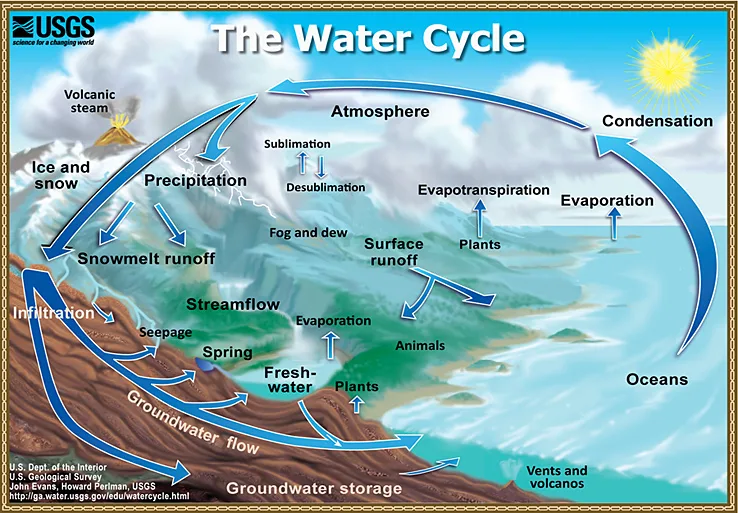
Nước dưới đất di chuyển chậm qua đá và trầm tích bở rời. Một phần quay lại mặt đất ở mạch nước, sông suối, hồ và đại dương, còn nước mặt trong sông suối và hồ có thể thấm ngược xuống để cho nước dưới đất. Nước mặt và nước dưới đất là một hệ thống liên thông.
Tự kiểm tra: Câu hỏi Mục 11.1 trong giáo trình ↗
11.2Lưu vực và cân bằng nước
11.2.1 Lưu vực
Đơn vị cơ bản của cảnh quan là (còn gọi là hay ): vùng đất thu nhận giáng thủy và đưa dòng chảy mặt về một dòng sông hay một đoạn sông. là những chỗ cao cục bộ ngăn cách các lưu vực. Mưa rơi ở một bên đường phân thủy chảy về một dòng sông; mưa rơi ở bên kia chảy về dòng khác. Mỗi con sông, phụ lưu và suối nhỏ đều có lưu vực riêng. Trên địa hình bằng phẳng, đường phân thủy khó nhận ra nhưng vẫn tồn tại.
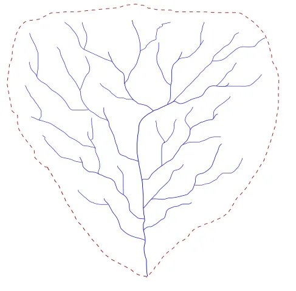
Các phần của một hệ thống sông
- : nơi dòng sông bắt đầu.
- : các dòng nhỏ hơn hợp lại ở phía hạ lưu thành dòng chính lớn hơn.
- : nơi dòng sông kết thúc, thường là ở đại dương.
- (lưu vực kín): lưu vực không có lối thoát ra biển; nước chỉ thoát đi bằng bay hơi.

Phần lớn sông suối ở miền tây Bắc Mỹ kết thúc trong các lưu vực kín. Chẳng hạn ở hạt Salt Lake, Utah, suối Little Cottonwood và sông Jordan chảy vào Hồ Muối Lớn (Great Salt Lake), nơi nước bay hơi (Hình 11.6).

| Thường xuyên | Tạm thời | |
|---|---|---|
| Thuật ngữ | ||
| Dòng chảy | Quanh năm; mực nước lên xuống theo mùa | Chỉ khi mưa hoặc vào mùa mưa |
| Khí hậu | Ẩm hoặc ôn hòa: đủ mưa, bay hơi thấp | Khô hạn (như phần lớn Utah): ít mưa, bay hơi cao |
| Lòng dẫn | Luôn có nước | Phần lớn thời gian trong năm là lòng khô hay ; dòng chảy bất ngờ gây |
Dọc vùng Wasatch Front của Utah (dải đô thị từ Brigham City đến Provo), một số lưu vực là khu bảo vệ lưu vực. Ở đó chó và bơi lội bị hạn chế vì có thể đưa vi khuẩn có hại và các chất khác vào nguồn nước uống của Salt Lake City và các thị trấn lân cận.
11.2.2 Cân bằng nước
vận hành giống như ngân sách chi tiêu cá nhân (Bảng 11.3). Nếu chi lớn hơn thu, ngân sách mất cân bằng và nước phải lấy từ khoản tiết kiệm (lượng trữ), nếu còn. Ở vùng khô hạn, cân bằng này cực kỳ quan trọng, và việc quản lý nó là một thách thức chính trị và xã hội lâu dài.
| Ngân sách tiền | Cân bằng nước |
|---|---|
| Thu | Giáng thủy; nước sông và nước dưới đất chảy vào |
| Chi | Khai thác nước dưới đất; bay hơi; nước sông và nước dưới đất chảy ra |
| Tiết kiệm | Lượng trữ: hồ chứa, tuyết, băng, độ ẩm đất và tầng chứa nước |
Các nhà thủy văn có thể lập cân bằng nước dưới đất cho bất kỳ khu vực nào (một bang, một hạt hay một tầng chứa nước), nhưng thường dùng ranh giới lưu vực, nơi nước mặt và nước dưới đất dễ tính toán nhất. Cân bằng nước dưới đất là phần then chốt của một mô hình thủy văn, mô hình kết hợp số liệu đo đạc với một hình dung khái niệm về hệ thống nước.
Tự kiểm tra: Câu hỏi Mục 11.2 trong giáo trình ↗
11.3Sử dụng và phân bố nước
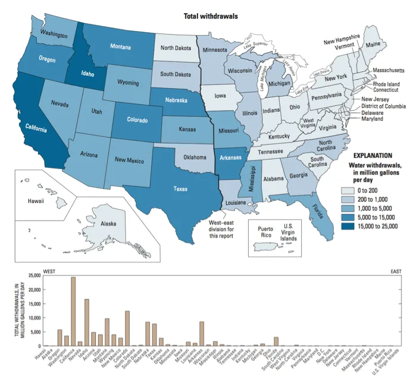
Sử dụng nước ở Hoa Kỳ qua các con số
- Mỗi ngày dùng 1.344 tỷ L (355 tỷ gallon) nước dưới đất và nước mặt.
- Trong đó 288 tỷ L (76 tỷ gallon) là nước dưới đất ngọt.
- California dùng 16% lượng nước dưới đất của cả nước.
- Nevada là bang khô hạn nhất; Utah khô hạn thứ hai.
- Utah có lượng nước sinh hoạt theo đầu người cao thứ hai: 632 L (167 gallon) mỗi ngày.
Nhu cầu cao cộng với nguồn cung hạn chế khiến Utah có nguy cơ thâm hụt cân bằng nước. Lượng nước sử dụng cũng thay đổi theo thời gian cùng với dân số (Hình 11.8).
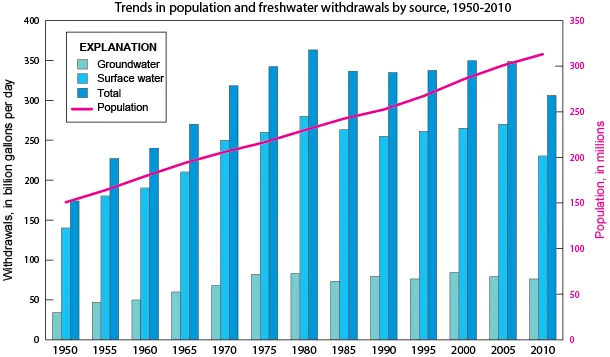
11.3.1 Phân bố nước mặt
Nước ngọt rất quý, nhất là ở vùng khí hậu khô. Trong toàn bộ nước ngọt, chỉ khoảng 1,2% là nước mặt, và 69% lượng đó bị giữ trong băng ngầm và băng vĩnh cửu. Sông chỉ chứa 0,006% nước ngọt và hồ chứa 0,26%.
Hoàn lưu khí quyển toàn cầu là yếu tố quan trọng nhất quyết định nơi có giáng thủy. Do và sự đốt nóng không đều của Trái Đất, không khí bốc lên gần xích đạo và gần vĩ độ 60° Bắc và Nam, và giáng xuống ở hai cực và gần vĩ độ 30° Bắc và Nam (Hình 11.9; xem thêm Chương 13). Không khí bốc lên thì lạnh đi và trút hơi ẩm, nên đất liền ở đó thường ẩm ướt. Không khí giáng xuống cản trở giáng thủy, nên đất liền ở đó thường khô.
Các yếu tố địa phương cũng quan trọng: gió thịnh hành, hải lưu (như ảnh hưởng của dòng Gulf Stream đến miền đông Bắc Mỹ), (sườn khuất gió khô hạn của dãy núi) và các vực nước lân cận. Khi không khí ẩm từ một hồ gặp núi gần đó, nó bốc lên, lạnh đi và có thể đổ tuyết hoặc mưa: .

Ở Hoa Kỳ, kinh tuyến 100 gần như chia đôi miền đông ẩm và miền tây khô hạn (Hình 11.10). Ở phía tây kinh tuyến này, cây trồng cần tưới. Nước mặt miền tây được trữ trong hồ chứa và lớp tuyết trên núi, rồi xả qua kênh khi nhu cầu cao.
Một số nơi khô nhất nằm trong tỉnh địa chất (Basin and Range), với các dãy núi chạy theo hướng bắc–nam. Phần lớn thung lũng ở đây nhận dưới 30 cm (12 in) giáng thủy mỗi năm, nhưng một số dãy núi nhận hơn 1,52 m (60 in) nước dưới dạng tuyết. Lượng này được đo bằng : độ sâu lớp nước mà tuyết tạo ra nếu tan hết, nhỏ hơn nhiều so với độ dày lớp tuyết.
11.3.2 Phân bố nước dưới đất
Nước dưới đất chiếm 30,1% nước ngọt của Trái Đất, là nguồn nước ngọt dồi dào nhất mà đa số người dân có thể tiếp cận. Phần lớn nước ngọt, 68,7%, là băng trong sông băng và chỏm băng (Bảng 11.4, Hình 11.11). Khi sông băng và chỏm băng tan do ấm lên toàn cầu, lượng nước ngọt đó chảy ra đại dương và không còn là nước ngọt.
| Nguồn nước | Thể tích (dặm khối) | Nước ngọt (%) | Tổng lượng nước (%) |
|---|---|---|---|
| Đại dương, biển và vịnh | 321.000.000 | — | 96,5 |
| Chỏm băng, sông băng và tuyết vĩnh cửu | 5.773.000 | 68,7 | 1,74 |
| Nước dưới đất (tổng) | 5.614.000 | — | 1,69 |
| — ngọt | 2.526.000 | 30,1 | 0,76 |
| — mặn | 3.088.000 | — | 0,93 |
| Độ ẩm đất | 3.959 | 0,05 | 0,001 |
| Băng ngầm và băng vĩnh cửu | 71.970 | 0,86 | 0,022 |
| Hồ (tổng) | 42.320 | — | 0,013 |
| — ngọt | 21.830 | 0,26 | 0,007 |
| — mặn | 20.490 | — | 0,006 |
| Khí quyển | 3.095 | 0,04 | 0,001 |
| Nước đầm lầy | 2.752 | 0,03 | 0,0008 |
| Sông | 509 | 0,006 | 0,0002 |
| Nước trong sinh vật | 269 | 0,003 | 0,0001 |
Tự kiểm tra: Câu hỏi Mục 11.3 trong giáo trình ↗
11.4Luật về nước
Chính quyền liên bang và tiểu bang ban hành luật để nước được sử dụng công bằng. Ở Hoa Kỳ, mỗi tiểu bang chịu trách nhiệm xây dựng hệ thống pháp lý phân chia nước.
11.4.1 Quyền sử dụng nước
Vì nước có hạn, nhất là ở miền Tây, các tiểu bang cấp : quyền hợp pháp đối với một phần hoặc toàn bộ một nguồn nước như mạch nước, sông suối, giếng hay hồ. Luật liên bang giao cho tiểu bang quản lý quyền sử dụng nước, trừ quyền sử dụng nước dành riêng của liên bang (ví dụ cho các vườn quốc gia và các bộ tộc người Mỹ bản địa) và quyền ưu tiên giao thông thủy (navigation servitude), quy định giữ cho các vùng nước thông thuyền luôn thông thuyền được. Mỗi bang quản lý quyền theo cách riêng, và bất kỳ ai (cá nhân, công ty hay tổ chức) đều cần quyền sử dụng nước để lấy hoặc dùng nước mặt hay nước dưới đất một cách hợp pháp.
Chiếm dụng trước: "đến trước, được quyền trước"
Quyền sử dụng nước ở một số bang miền tây theo nguyên tắc ("first in time, first in right"): người giữ quyền sử dụng nước lâu đời nhất được nhận nước trước mỗi khi không đủ nước cho mọi quyền.
Sông Colorado và các phụ lưu của nó chảy qua một vùng sa mạc: bảy bang (Wyoming, Colorado, Utah, New Mexico, Arizona, Nevada, California), các khu bảo tồn của người Mỹ bản địa và Mexico. Khi miền Tây phát triển và California trở thành vùng nông nghiệp lớn, các bang này lập một cân bằng nước cho lưu vực: năm 1922, chia cho mỗi bang một thể tích cố định dựa trên lưu lượng đo được của sông. Nhưng lưu lượng năm 1922 cao hơn mức trung bình dài hạn, nên lượng nước được phân bổ nhiều hơn lượng sông thường mang. Các thỏa thuận về sau, gồm những thỏa thuận gắn với đập Hoover (trước đây là đập Boulder) và đập Glen Canyon, cùng một hiệp ước với Mexico, được Cục Khai hoang Hoa Kỳ (U.S. Bureau of Reclamation) gọi chung là "Luật của dòng sông" (The Law of the River).
- Hiệp ước sông Colorado chia nước sông cho bảy bang trong lưu vực.
- Hoàn thành đập Hoover (nguồn ngoài: U.S. Bureau of Reclamation).
- Hiệp ước về nước giữa Hoa Kỳ và Mexico (nguồn ngoài: U.S. Bureau of Reclamation).
- Hoàn thành đập Glen Canyon, tạo nên hồ Powell (nguồn ngoài: U.S. Bureau of Reclamation).
Nhiều người cho rằng nước sông vẫn bị phân bổ quá mức: dòng chảy không còn đến được điểm cuối ban đầu của nó ở biển. Các đập chuyển dòng nước và để nước bay hơi, gây lo ngại nghiêm trọng về cân bằng nước, và hạn hán được dự báo cùng với ấm lên toàn cầu càng làm vấn đề thêm nặng. Luật của dòng sông cho thấy các thỏa thuận về nước giữa các bang phức tạp và chậm chạp thế nào, và nước quan trọng đến mức nào.
Thung lũng Snake: Utah và Nevada
Thung lũng Snake nằm vắt qua biên giới Utah–Nevada, với phần lớn đất có thể tưới nằm ở Utah. Năm 1989, Cơ quan Cấp nước Nam Nevada (SNWA) xin quyền sử dụng nước để dẫn bằng đường ống tới 191.189.707 m³ (155.000 acre-foot) nước mỗi năm từ các thung lũng Spring, Snake, Delamar, Dry Lake và Cave về miền nam Nevada, chủ yếu cho Las Vegas. (Một acre-foot là lượng nước phủ một mẫu Anh (acre) sâu một foot.) Utah và Nevada đã cố gắng đạt thỏa thuận nhưng chưa giải quyết xong.
Cập nhật (nguồn ngoài): tháng 5 năm 2020, hội đồng SNWA biểu quyết rút các hồ sơ xin khai thác nước dưới đất đang chờ xét và đưa dự án đường ống vào tình trạng "hoãn vô thời hạn" (indefinite deferred status) (Las Vegas Sun, 21/5/2020).
11.4.2 Chất lượng và bảo vệ nước
| Luật hoặc chương trình | Nội dung |
|---|---|
| (Clean Water Act; bản sửa đổi của Đạo luật Kiểm soát Ô nhiễm Nước Liên bang) | Bảo vệ các vùng nước thông thuyền khỏi việc đổ thải và ô nhiễm nguồn điểm. |
| (Safe Drinking Water Act) | Bảo đảm nước từ các đơn vị cấp nước công cộng, như thành phố và thị trấn, an toàn để uống. |
| Chương trình của EPA (một phần của Đạo luật Ứng phó, Bồi thường và Trách nhiệm Môi trường Toàn diện năm 1980, CERCLA) | Chi trả việc làm sạch ô nhiễm nguy hại, kể cả ô nhiễm nước mặt và nước dưới đất. Tiểu bang và EPA có thể trả tiền xử lý rồi kiện bên gây ô nhiễm để thu hồi chi phí; bên gây ô nhiễm có thể tránh bị kiện bằng cách tự làm sạch hoặc trả tiền làm sạch. |
Tự kiểm tra: Câu hỏi Mục 11.4 trong giáo trình ↗
11.5Nước mặt
Trong địa chất, (stream) là bất kỳ khối nước mặt đang chảy nào bị giới hạn trong một lòng dẫn; "sông", "suối", "lạch" là từ thông thường, không phải thuật ngữ địa chất. Cùng với sóng (Chương 12), dòng chảy là tác nhân quan trọng nhất xâm thực và vận chuyển trầm tích trên bề mặt Trái Đất. Chúng tạo nên phần lớn cảnh quan và là nguồn nước then chốt. Hai yếu tố chính quyết định cách dòng chảy xâm thực và mang trầm tích là:
- : độ dốc của dòng chảy, tính bằng mét trên kilômét hoặc foot trên dặm. Độ dốc lớn thúc đẩy xâm thực. Khi lực kiến tạo nâng một ngọn núi lên, độ dốc tăng và dòng chảy đào sâu, cuối cùng tạo thành thung lũng.
- Vận tốc dòng chảy: nước chảy nhanh đến đâu. Về phía hạ lưu, độ dốc giảm, nhưng lưu lượng và kích thước lòng dẫn tăng do các phụ lưu đổ vào, và độ nhám lòng dẫn giảm vì trầm tích lót lòng dẫn mịn dần (ít ma sát hơn). Kết quả tổng hợp là vận tốc thực ra tăng dần từ suối núi đến cửa sông.
11.5.1 Lưu lượng
Kích thước dòng chảy được đo bằng : thể tích nước chảy qua một điểm trong một khoảng thời gian, tính bằng mét khối trên giây (m³/s) hoặc foot khối trên giây (ft³/s, cfs). Lưu lượng tăng dần về phía hạ lưu (Bảng 11.6).
| Sông | m³/s | ft³/s (cfs) |
|---|---|---|
| Sông Jordan tại hồ Utah | 16,25 | 574 |
| Sông Mississippi (lớn nhất Bắc Mỹ) | 16.990 | 600.000 |
| Sông Amazon (lớn nhất thế giới) | 175.565 | 6.200.000 |
Vận tốc cũng thay đổi ngay tại một vị trí trên dòng chảy:
- Nếu lòng dẫn hẹp lại mà lưu lượng không đổi, cùng một thể tích phải đi qua chỗ nhỏ hơn nên vận tốc tăng, giống như lấy ngón tay bịt đầu vòi tưới.
- Khi mưa bão hoặc tuyết tan mạnh, dòng chảy mặt tăng, làm tăng cả lưu lượng lẫn vận tốc.
- Trong lòng dẫn thẳng, sâu đều, nước chảy nhanh nhất ở giữa, sát mặt nước, xa nhất khỏi ma sát với đáy và bờ.
- Ở khúc uốn, nước chảy nhanh nhất ở phía ngoài khúc uốn, gần bờ lở (Hình 11.13).
(thalweg) là đường nối các điểm sâu nhất dọc lòng sông.

11.5.2 Dòng chảy mặt và thấm
Nước mưa thấm xuống hay chảy tràn phụ thuộc vào lượng, kiểu và cường độ giáng thủy; thảm thực vật; độ dốc; nhiệt độ và hướng phơi của mặt đất; điều kiện trước đó; và đất (Bảng 11.7). Nếu mưa rơi nhanh hơn khả năng thấm của đất, phần dư sẽ thành dòng chảy mặt.
| Yếu tố | Dòng chảy mặt nhiều hơn | Thấm nhiều hơn |
|---|---|---|
| Cường độ mưa | Mưa cường độ lớn | Cùng lượng mưa nhưng trải ra thời gian dài hơn |
| Thảm thực vật | Che phủ thưa | Che phủ dày làm chậm dòng chảy tràn, cho nước thời gian thấm xuống |
| Độ dốc | Dốc (vách đá) | Thoải hoặc bằng (lòng chảo) |
| Độ ẩm đất | Đất đã bão hòa | Đất khô còn chỗ chứa nước |
| Loại đất | Giàu sét | Giàu sỏi |
Vùng đất nhận nhiều ánh nắng trực tiếp hơn hoặc có nhiệt độ theo mùa cao hơn thì cả lượng thấm lẫn dòng chảy mặt đều ít hơn, vì nhiều nước bị mất qua bốc thoát hơi nước.
11.5.3 Kiểu mạng lưới sông
Hình dạng mà các phụ lưu tạo ra trong một vùng là của vùng đó. Nó chủ yếu phụ thuộc vào đá bên dưới và các cấu trúc của đá như nếp uốn và đứt gãy (Hình 11.14, Bảng 11.8).

| Kiểu | Nơi hình thành |
|---|---|
| (phổ biến nhất) | Đá hoặc trầm tích đồng nhất, phần lớn nằm ngang, bị xâm thực đều theo mọi hướng, như trầm tích bồi tích hay đá trầm tích nằm ngang |
| Đá trầm tích bị uốn nếp hoặc nghiêng, bị xâm thực không đều theo độ bền, như ở dãy Appalachian | |
| Địa hình ít chênh lệch, với mặt lớp, khe nứt hoặc đứt gãy tạo thành mạng lưới hình chữ nhật | |
| Các dòng chảy tỏa ra từ một điểm cao trung tâm như núi hay núi lửa (mỗi dòng thường có dạng cành cây) | |
| Vùng đá vôi rộng lớn, nơi dòng chảy biến mất xuống lòng đất vào hang động |
11.5.4 Các quá trình sông
Các quá trình (fluvial) quyết định cách dòng chảy sinh ra, vận chuyển và lắng đọng trầm tích. Chúng gồm vận tốc, độ dốc, xâm thực, vận chuyển, lắng đọng, cân bằng và mực cơ sở. Một hệ thống sông có nhiều phụ lưu nhỏ ở vùng nguồn, một dòng chính trên bãi bồi và các chi lưu ở cửa sông; các hệ thống lớn như Mississippi kết hợp nhiều thành phần như vậy. Ba đới của nó hiện rõ trên của dòng chảy, tức đồ thị độ cao lòng sông dọc toàn bộ chiều dài (Hình 11.15).
Đới sinh trầm tích
Ở , các rãnh và mương xói xâm thực trầm tích và cấp cho các phụ lưu lớn hơn. Phụ lưu đầu nguồn có độ dốc lớn nhất, nên xâm thực ở đó sinh ra nhiều trầm tích. Dòng chảy đầu nguồn hẹp và thẳng, bãi bồi nhỏ hoặc không có, và thường nằm ở độ cao lớn. Phần lớn đầu nguồn sông Colorado nằm ở dãy Rocky thuộc Wyoming và Colorado, phía tây Đường phân thủy Lục địa; đầu nguồn hệ thống Mississippi nằm phía đông Đường phân thủy Lục địa và phía tây đường phân thủy Appalachian.
Đới vận chuyển trầm tích
Ở đới này, sự xâm thực trầm tích mịn trong lòng dẫn gần như cân bằng với sự vận chuyển qua bãi bồi. Dòng chảy nhanh và dốc hơn mang hạt lớn hơn; khi vận tốc giảm, hạt lớn lắng xuống, và khi vận tốc tăng chúng lại bị cuốn lên. Trầm tích được vận chuyển chia thành ba loại tải (Hình 11.16):
- : các hạt lớn nhất, đặc nhất, di chuyển dọc đáy bằng (nảy lên) và (lăn hoặc bị đẩy trượt).
- : các hạt nhỏ hơn được nâng lên và mang theo trong nước. Kích thước nào đi theo tải đáy hay tải lơ lửng phụ thuộc vào vận tốc dòng chảy.
- : các ion trong dung dịch từ phong hóa hóa học, như bicarbonat (HCO₃⁻), calci (Ca²⁺), chlorid (Cl⁻), kali (K⁺) và natri (Na⁺). Lượng này không phụ thuộc vào vận tốc dòng chảy.
là vùng đất bằng bên cạnh lòng dẫn thường xuyên bị ngập. Ngập lụt là hiện tượng tự nhiên và bổ sung trầm tích, tạo nên đất màu mỡ. Dòng chảy chảy nhanh nhất khi gần đầy lòng dẫn, gọi là . Khi tràn bờ, nước chảy chậm lại; trầm tích nó đang mang lắng xuống trước tiên ở mép lòng dẫn, đắp nên một gờ thấp gọi là (Hình 11.17).
Đới lắng đọng trầm tích
Lắng đọng xảy ra khi tải đáy và tải lơ lửng dừng lại trên đáy sông, hồ hay đại dương vì độ dốc và vận tốc giảm. Xâm thực và lắng đọng đều diễn ra ở đới vận chuyển (ở bờ lở và doi cát bờ lồi), nhưng sự lắng đọng cuối cùng là nơi dòng chảy đổ vào hồ hoặc đại dương. Ở đó cát mịn, bột và sét bồi đắp nên .
Cân bằng và mực cơ sở
Mỗi dòng chảy đều có một trắc diện dọc từ đầu nguồn đến cửa sông (Hình 11.18). Dòng chảy luôn hướng tới cân bằng năng lượng giữa xâm thực, vận chuyển, độ dốc, vận tốc, lưu lượng và hình dạng lòng dẫn dọc trắc diện. Sự cân bằng này là trạng thái cân bằng, gọi là ; dòng chảy gần đạt trạng thái đó là .

là độ cao của cửa sông, mức thấp nhất mà dòng chảy có thể xâm thực tới. Mực cơ sở tối hậu là mực nước biển, nhưng một hồ hay hồ chứa có thể là mực cơ sở địa phương. Đại Bồn địa (miền tây Utah, Nevada và các bang lân cận) không có lối thoát ra biển, nên dòng chảy ở đó có mực cơ sở nội lục. Mực cơ sở thay đổi khi mực nước biển dâng hoặc hạ, hoặc khi có đập tự nhiên hay nhân tạo.
Khi mực cơ sở thay đổi
- Mực cơ sở hạ xuống: dòng chảy đào sâu và làm sâu thêm lòng dẫn.
- Mực cơ sở dâng lên: lắng đọng tăng khi dòng chảy điều chỉnh về một trạng thái cân bằng mới.
11.5.5 Địa hình do sông tạo ra
Địa hình sông là các dạng địa hình do dòng chảy xâm thực hoặc lắng đọng tạo nên. Nhiều dạng phụ thuộc vào kiểu lòng dẫn.
Các kiểu lòng dẫn
Độ dốc, tải trầm tích, lưu lượng và mực cơ sở đều quyết định kiểu lòng dẫn (Bảng 11.9).
| Kiểu | Mô tả | Nơi gặp |
|---|---|---|
| Độ dốc lớn, lưu lượng nhỏ, thung lũng hẹp hình chữ V | Gần đầu nguồn, ở vùng núi | |
| Nhiều lòng dẫn tách ra rồi nhập lại quanh các bãi giữa dòng | Bãi bồi độ dốc nhỏ gần nguồn trầm tích thô: dòng chính thoát nước từ núi, hoặc trước sông băng | |
| Một lòng dẫn uốn lượn qua lại như con rắn; mở rộng bãi bồi bằng xâm thực ngang | Nơi dòng chảy rời đầu nguồn và đi vào đới vận chuyển | |
| Khúc uốn đào sâu vào đá gốc | Vùng nâng lên, như cao nguyên Colorado |
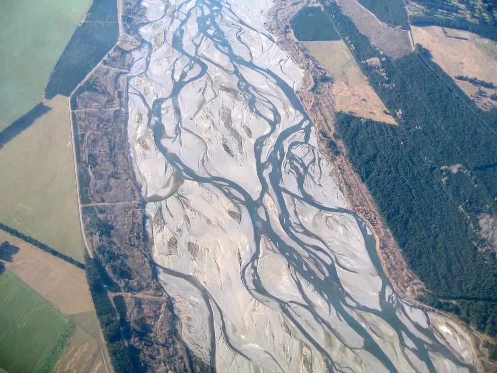
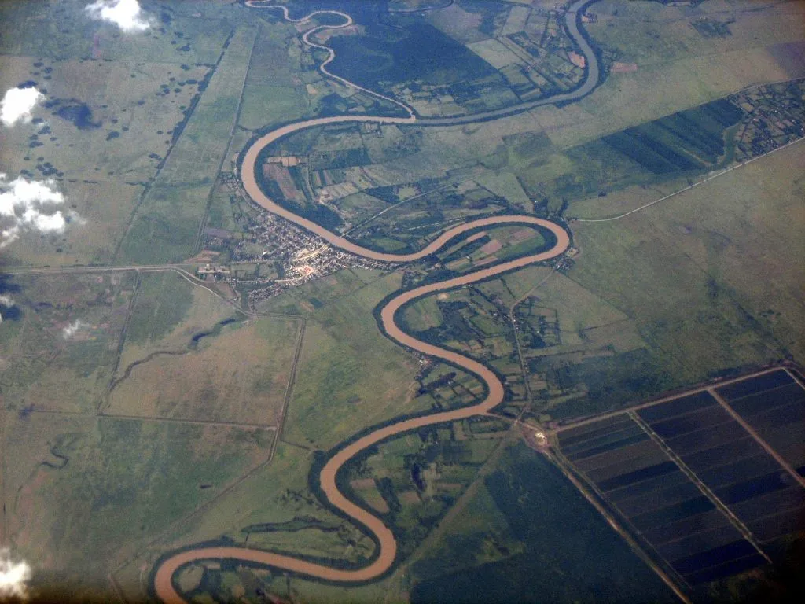
Ở sông uốn khúc, nước chảy nhanh nhất ở phía ngoài mỗi khúc uốn. Nó xâm thực bờ đó, gọi là , và vòng uốn ngày càng rộng. Ở đoạn thẳng, đường sâu nhất và dòng nhanh nhất ở giữa, nhưng ở khúc uốn đường sâu nhất lệch về phía bờ lở. Đối diện bờ lở, ở phía trong khúc uốn, vận tốc nhỏ nhất và trầm tích lắng đọng thành (Hình 11.21).

Ở nơi đất bị nâng lên, như cao nguyên Colorado, các dòng sông uốn khúc trước kia chảy trên mặt cao nguyên đã trở thành (đào lòng): chúng giữ nguyên hình dạng uốn khúc trong khi đào sâu vào đá gốc. Trong vài triệu năm qua, sông Colorado và các phụ lưu đã đào sâu hàng trăm đến hàng nghìn foot vào các lớp đá nằm ngang của cao nguyên, tạo nên những hẻm vực sâu, kể cả Grand Canyon (Hình 11.22, Hình 11.23).
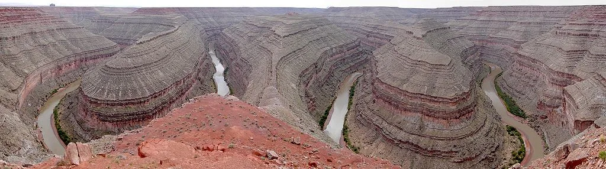

Địa hình bãi bồi
Nhiều dạng địa hình xuất hiện trên bãi bồi của sông uốn khúc. Các khúc uốn và những trận lũ định kỳ mở rộng bãi bồi bằng cách xâm thực vùng đất cao bên cạnh (Hình 11.24).
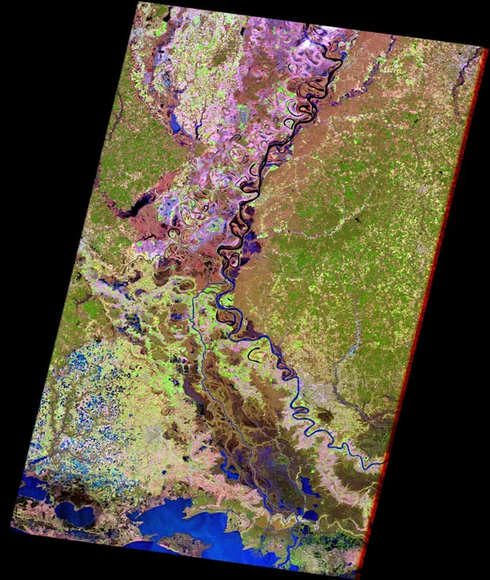
Đê và các dòng chảy trên bãi bồi
- Đê tự nhiên giới hạn lòng dẫn. Chúng có thể chặn các phụ lưu không cho đổ vào dòng chính, nên các này chảy song song với dòng chính cho đến khi gặp một chỗ hở của đê để nhập vào.
- Con người đắp đê nhân tạo để hạn chế lũ. Trầm tích phá vỡ đê khi lũ sẽ trải bột và sét lên bãi bồi thành (crevasse splay), tạo nên đất canh tác tốt.
- Khi nước lũ tràn qua đê nhân tạo, đê có thể bị xói nhanh với hậu quả thảm khốc. Nông dân vẫn quay lại và xây dựng lại vì đất rất tốt.
Với xâm thực ở phía ngoài và lắng đọng ở phía trong các khúc uốn, lòng sông uốn khúc dịch chuyển qua lại trên bãi bồi. Trên những bãi bồi rộng, độ dốc rất nhỏ, khúc uốn có thể thắt chặt đến mức dòng sông cắt qua cổ hẹp: hiện tượng cắt khúc uốn. Vòng uốn cũ bị tách ra thành , bị trầm tích lấp dần, trở thành đất ngập nước, và cuối cùng thành (Hình 11.25, Hình 11.26). Quá trình này có thể diễn ra nhanh. Ở nơi dòng sông là ranh giới địa lý hay chính trị, những dịch chuyển này có thể gây tranh chấp.
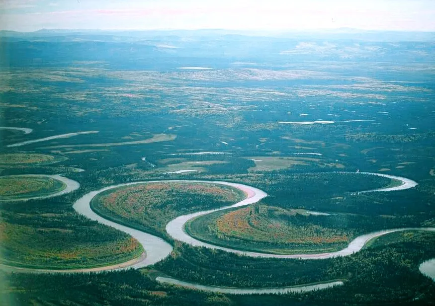


Nón phóng vật
(quạt bồi tích) hình thành nơi dòng chảy rời hẻm núi và đi vào thung lũng. Không còn bị vách hẻm núi giới hạn, dòng chảy chậm lại, tỏa rộng và thả tải đáy đủ mọi cỡ hạt, như "một châu thổ trên cạn" ("a delta in the air"). Khi các lòng dẫn bị trầm tích lấp đầy, dòng chảy dịch sang ngang, và khối trầm tích lớn dần thành hình nón với các chi lưu tỏa ra từ miệng hẻm núi (Hình 11.29). Nón phóng vật phổ biến ở vùng khí hậu khô miền Tây, nơi các dòng chảy tạm thời rời hẻm núi trong tỉnh Bồn địa và Dãy núi.
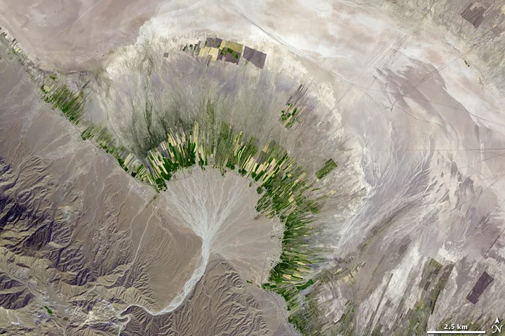
Châu thổ
hình thành nơi dòng chảy gặp vùng nước lặng như hồ hay đại dương và thả tải đáy cùng tải lơ lửng. Nếu xâm thực của sóng mạnh hơn sự lắng đọng của sông, châu thổ không hình thành.

Châu thổ Mississippi
- Châu thổ lớn nhất và nổi tiếng nhất Hoa Kỳ, nơi sông Mississippi đổ vào vịnh Mexico.
- Lưu vực của nó lớn nhất Bắc Mỹ, thoát nước cho 41% lục địa Hoa Kỳ, nên sông mang rất nhiều trầm tích.
- Các công trình kỹ thuật đã nắn thẳng lòng sông và cố định nó tại chỗ; sông ngắn hơn trước 229 km. Lắng đọng nay tập trung ở một dòng chính, tạo nên châu thổ "chân chim".
Từ 1976 đến 2001, đường bờ lùi vào và đất bị ngập, trong khi trầm tích chỉ bồi ở đầu các chi lưu (Hình 11.31, Hình 11.32). Những thay đổi này cho thấy mực nước biển dâng và đất sụt lún: than bùn nén chặt và lún xuống vì trầm tích mới không còn đến được.
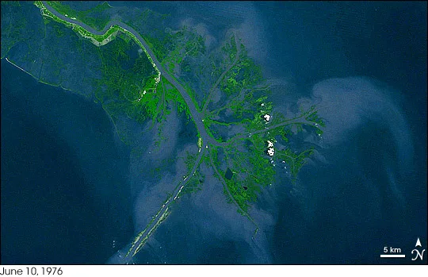

Châu thổ Mississippi bắt đầu hình thành khoảng 7.500 năm trước, khi mực nước biển ngừng dâng sau thời kỳ băng hà cuối cùng. Trong 7.000 năm qua, trước khi con người can thiệp, dòng sông đã bồi nên một loạt thùy châu thổ, lần lượt bỏ từng thùy để tìm đường ngắn hơn ra vịnh. Sóng vịnh tái tạo mỗi thùy bị bỏ, và sự lún đẳng tĩnh cùng với nén chặt làm đất sụt lún.
Châu thổ có thể hình thành nhanh. Trong trận động đất Madison Canyon cường độ 7,5 năm 1959 ở Montana, một vụ sạt lở đất chặn sông Madison và tạo nên hồ Quake, đến nay vẫn còn (xem Học phần 10). Một phụ lưu nhỏ trước kia đổ vào sông Madison nay đổ vào hồ Quake, bồi nên một châu thổ trầm tích thô bị xâm thực từ khối núi nâng lên ở phía bắc.
| Kiểu | Điều kiện | Ví dụ |
|---|---|---|
| Triều nhỏ; năng lượng sóng chiếm ưu thế | Châu thổ sông Nile, Địa Trung Hải: hình tam giác kinh điển (chữ cái Hy Lạp Δ) đã đặt tên cho dạng địa hình này (Hình 11.33) | |
| Thủy triều mạnh định hình châu thổ, đẩy nước biển xâm nhập thành các dải thẳng vào châu thổ | Châu thổ Hằng–Brahmaputra, vịnh Bengal: châu thổ lớn nhất thế giới, với rừng ngập mặn lớn nhất thế giới là Sundarbans (Hình 11.34) |
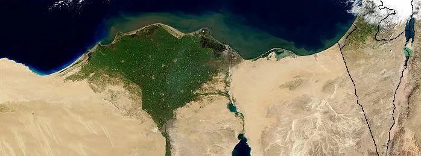

Hình dạng châu thổ cho biết lực chi phối
Do sông chi phối (Mississippi): trầm tích bồi thành những dải dài dọc các chi lưu cố định, dạng "chân chim".
Do sóng chi phối (Nile): sóng dàn trải trầm tích thành một mặt trước hình cung trơn.
Do triều chi phối (Hằng–Brahmaputra): thủy triều cắt các lạch thẳng vào châu thổ.
"Do sông chi phối" là loại thứ ba theo cách phân loại chuẩn; chương mô tả hình chân chim của Mississippi nhưng không gọi tên loại này.
Hồ Bonneville là một (hồ pluvial) lớn, từng phủ nửa phía tây Utah và một phần miền đông Nevada khoảng 30.000 đến 12.000 năm trước. Mặt hồ đạt khoảng 5.100 foot trên mực nước biển, lấp đầy các lòng chảo và biến nhiều ngọn núi thành đảo. Bùn hồ, bột và sỏi thô từ núi đều được lắng đọng. Mực nước hồ thay đổi theo khí hậu khu vực và theo sự cố vỡ thảm khốc của lối thoát chính của hồ tại đèo Red Rock. Ở những mức nước giữ ổn định lâu, sóng khoét nên các thềm đến nay vẫn thấy trên nhiều sườn núi, và các châu thổ lớn hình thành ở cửa các hẻm núi trong thung lũng Salt Lake, Cache và các thung lũng khác. Hồ Muối Lớn là phần còn lại của hồ Bonneville, và các thành phố được xây trên trầm tích châu thổ của nó (Hình 11.35, Hình 11.36).

Tóm lược về hồ Bonneville
- Hồ thời kỳ mưa, khoảng 30.000–12.000 năm trước.
- Mực nước cao nhất khoảng 5.100 ft (1.555 m) trên mực nước biển.
- Lối thoát tại đèo Red Rock bị vỡ làm hồ hạ thấp đột ngột.
- Để lại các thềm do sóng khoét và châu thổ ở cửa hẻm núi.
- Hồ Muối Lớn là phần còn lại của nó.

Thềm sông
là phần còn lại của các bãi bồi cũ, nằm cao hơn bãi bồi và lòng sông hiện tại. Giống khúc uốn khoét sâu, thềm sông hình thành khi đất nâng lên hoặc mực cơ sở hạ xuống: dòng sông đào sâu, và các khúc uốn của nó mở rộng một bãi bồi mới, thấp hơn (Hình 11.37). Thềm sông cũng có thể hình thành trong những trận lũ cực lớn từ sông băng đang thoái lui. Một ví dụ kinh điển là chuỗi thềm dọc sông Snake trong Vườn quốc gia Grand Teton, Wyoming (Hình 11.38 cho thấy thềm sông ở Scotland).
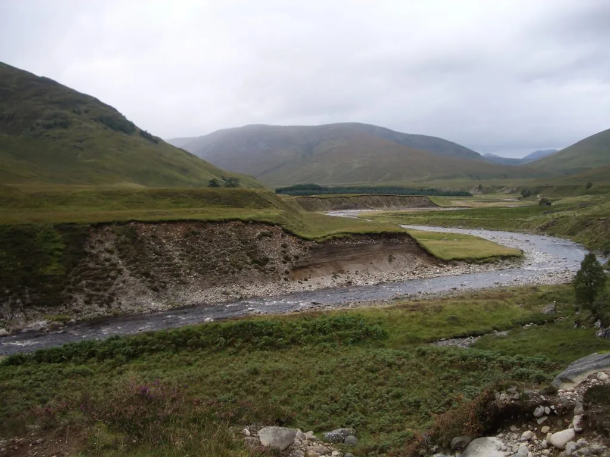
Tự kiểm tra: Câu hỏi Mục 11.5 trong giáo trình ↗
11.6Nước dưới đất
Nước dưới đất là nguồn nước ngọt quan trọng. Ở đâu cũng có nước dưới đất ở một độ sâu nào đó, nhưng lượng có thể bơm lên và chất lượng của nó đều có giới hạn.
11.6.1 Độ rỗng và độ thấm
(tầng ngậm nước) là một đơn vị đá hoặc trầm tích chứa nước dưới đất có thể khai thác. Một tầng chứa nước tốt phải vừa rỗng vừa thấm (Hình 11.39):
- : khoảng trống có thể chứa nước, tính theo phần trăm tổng thể tích đá. là khoảng trống giữa các hạt cát hoặc lỗ hổng khí trong đá núi lửa; là khe nứt hoặc khoảng trống do hòa tan hình thành về sau. Nén chặt và gắn kết trong quá trình thạch hóa làm giảm độ rỗng (Chương 5.3).
- : mức độ các khoảng trống thông với nhau để nước đi qua được.
Trầm tích chọn lọc tốt có độ rỗng cao hơn vì không có hạt nhỏ lấp vào khoảng trống giữa các hạt lớn. Đá phiến sét làm từ sét thường có độ rỗng cao, nhưng các lỗ rỗng của nó thông nhau kém, nên độ thấm thấp.
Các nhà địa chất thường dùng (độ dẫn thủy lực) để mô tả chất lỏng di chuyển dễ đến đâu. Nó kết hợp độ thấm của vật liệu với tính chất của chất lỏng như độ nhớt, nên các nhà địa chất dầu khí dùng nó cho các bể chứa dầu khí và các nhà địa chất thủy văn dùng nó cho tầng chứa nước. Hệ số thấm cao nghĩa là chất lỏng đi qua nhanh.
11.6.2 Tầng chứa nước
Để đá hoặc trầm tích là tầng chứa nước, lỗ rỗng của nó phải chứa nước ít nhất một phần, và nó phải đủ thấm để dẫn nước. Tầng chứa nước có thể là nhiều thành hệ trải trên một vùng rộng hoặc chỉ một thành hệ cục bộ.
Ba chữ P của tầng chứa nước cấp nước
- Porous (rỗng): chứa được nước
- Permeable (thấm): cho nước di chuyển
- Potable (uống được): an toàn để uống
11.6.3 Dòng chảy nước dưới đất
Nước thấm xuống đất đi qua các lớp có lượng nước và áp suất khác nhau (Hình 11.40, Bảng 11.11).
| Đới | Lỗ rỗng | Áp suất chất lỏng |
|---|---|---|
| (đới chưa bão hòa, vadose) | Chưa chứa đầy nước; rễ cây sống ở phần trên | Nhỏ hơn áp suất khí quyển |
| (thường mỏng) | Được lấp đầy nhờ mao dẫn (bám dính cộng kết dính) | Nhỏ hơn áp suất khí quyển |
| : ranh giới giữa viền mao dẫn và đới bão hòa | ||
| (đới phreatic) | Chứa đầy nước hoàn toàn | Bằng hoặc lớn hơn áp suất khí quyển |
là lỗ khoan vào tầng chứa nước để lấy, đo và đôi khi bơm thêm nước. Giếng là cách các nhà địa chất đo độ sâu đến nước dưới đất.
Mực nước ngầm đơn giản nhất nằm trong , tức tầng không có lớp cách nước bên trên. là lớp có độ thấm thấp nằm trên và/hoặc dưới tầng chứa nước, hạn chế nước đi vào hoặc đi ra. Nó gồm:
- (aquiclude): không thấm đến mức không có nước đi qua.
- (aquitard): làm nước đi qua chậm đi rất nhiều.
Lớp cách nước có thể tạo áp cho tầng chứa nước bên dưới bằng cách giữ lại nước được bổ cập ở độ cao lớn hơn. Khi đó , tức độ cao mà nước sẽ dâng tới trong một giếng khoan vào tầng chứa nước, nằm cao hơn nóc tầng chứa nước, và đôi khi cao hơn cả mặt đất. Đứt gãy hoặc giếng xuyên qua tầng chứa nước có áp tạo nên mạch nước hoặc giếng tự phun, gọi là (Hình 11.41).

Mực nước ngầm nhìn chung phản ánh địa hình nhưng thoải hơn, vì dọc mực nước ngầm áp suất nước bằng áp suất khí quyển. Nơi mực nước ngầm gặp mặt đất, nước xuất hiện thành sông nhận nước, mạch nước, hồ hoặc đất ngập nước (Hình 11.42).
- Lòng dẫn của cắt qua mực nước ngầm, nên dòng sông nhận thêm nước từ lòng đất.
- Lòng dẫn của nằm cao hơn mực nước ngầm, nên dòng sông mất nước xuống dưới. (Chương ghi "thấp hơn"; xem Ghi chú kiểm chứng.) Sông mất nước có thể chỉ chảy theo mùa, hoặc là dòng chảy tạm thời ở vùng khí hậu khô, chỉ có nước sau mưa bão, và khi đó tiềm ẩn nguy cơ lũ quét nghiêm trọng.

Đọc thủy đồ
Các nhà địa chất dùng giếng để đo độ cao mực nước ngầm và mặt áp lực. là đồ thị độ sâu đến nước dưới đất theo thời gian.
Mực nước giếng thay đổi vì nhiều lý do, có thể từng phút, theo mùa và theo những chu kỳ dài hơn.
Video của chương có nhắc đến trang Groundwater Watch của USGS (xem Tài liệu tham khảo).
Định luật Darcy
Năm 1856, kỹ sư người Pháp Henry Darcy đề xuất rằng dòng chảy qua vật liệu rỗng bị chi phối bởi độ thấm, áp suất và diện tích mặt cắt. Ông kiểm chứng bằng các ống nhồi trầm tích cho nước chảy qua, và kết quả đã xác lập : một thước đo định lượng của hệ số thấm và lưu lượng. Định luật này tương tự định luật dẫn nhiệt Fourier, định luật Ohm cho mạch điện và định luật khuếch tán Fick.
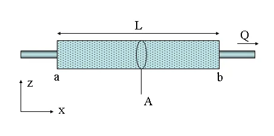
Bơm nước làm thay đổi mực nước quanh giếng (Hình 11.45):
- Trong tầng chứa nước không áp, bơm nước làm mực nước ngầm gần giếng hạ xuống (), tạo thành .
- Trong tầng chứa nước có áp, bơm một giếng artesian làm áp suất, tức mặt áp lực, quanh giếng giảm xuống.
Nơi một phễu hạ thấp gặp một phễu khác, hoặc gặp một ranh giới như khối núi không thấm, độ hạ thấp tăng lên. Nơi phễu chạm tới một vùng bổ cập, độ hạ thấp giảm đi.

11.6.4 Bổ cập
là nơi nước mặt đi vào tầng chứa nước bằng cách thấm. Vùng bổ cập thường nằm ở địa hình cao, có sông mất nước và đá thấm, và đánh dấu điểm đầu của các đường dòng nước dưới đất. Ở tỉnh Bồn địa và Dãy núi, tầng chứa nước trong thung lũng được bổ cập dọc chân núi. Ở chân đồi thung lũng Salt Lake, các sông mất nước cấp nước cho trầm tích châu thổ giàu sỏi của hồ Bonneville cổ, có nơi cấp cho giếng phun.
Tầng chứa nước cũng có thể được quản lý bằng trữ và thu hồi: tăng bổ cập bằng giếng bơm ép và các hành lang hoặc hồ thấm (Hình 11.46). Giếng bơm ép, được chính quyền tiểu bang và liên bang quản lý để không làm hại chất lượng hay nguồn cung nước dưới đất hiện có, bơm nước vào tầng chứa nước để trữ. Một số tầng chứa nước có thể trữ đủ để dùng như một hồ chứa trên mặt: nạp đầy khi nhu cầu thấp và nguồn cung dồi dào, và bơm ra khi nhu cầu cao và nguồn cung ít.

11.6.5 Thoát nước
là nơi mực nước ngầm hoặc mặt áp lực gặp mặt đất. Chúng đánh dấu điểm cuối của các đường dòng nước dưới đất, với mạch nước, giếng tự phun (artesian), sông nhận nước và trong các thung lũng khô của tỉnh Bồn địa và Dãy núi.
11.6.6 Khai thác cạn kiệt nước dưới đất và sụt lún
Nước ngọt uống được là hữu hạn; nguồn nước tự nhiên duy nhất trên đất liền là giáng thủy. Ở nhiều nơi, nước dưới đất bị bơm nhanh hơn tốc độ được bổ sung, nên mực nước và mặt áp lực hạ xuống, còn các vùng thoát thu hẹp hoặc khô cạn. Sự suy giảm trên diện rộng này là (khai thác quá mức). Nó có thể làm giếng cạn, giảm dòng chảy của mạch nước và sông suối, và gây sụt lún. Khi đó nước dưới đất phải được đối xử như một thân quặng: một khi cạn kiệt, thị trấn có thể thành thị trấn ma.
Nước giúp chống đỡ khung hạt của tầng chứa nước nhờ mà nó tạo ra, sinh ra từ trọng lượng của cột nước bên trên. Nếu khai thác làm giảm áp lực lỗ rỗng, tầng chứa nước có thể bị nén chặt và mặt đất lún xuống: . Tầng chứa nước bằng trầm tích bở rời có nguy cơ cao nhất, nhất là những tầng có nhiều lớp sét, vì sét bị nén rất nhiều khi mất nước.

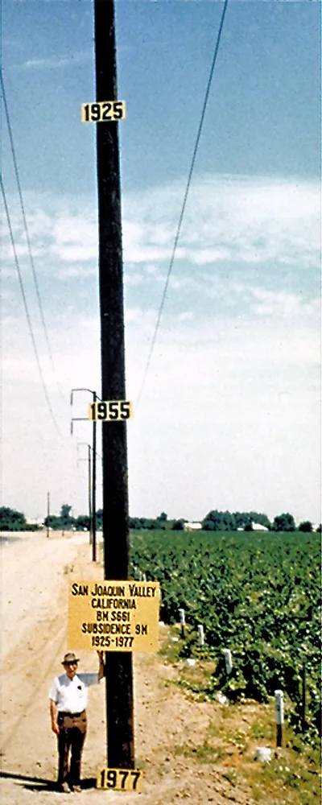
Đọc cây cột
Các biển đánh dấu vị trí mặt đất ở những năm trước. Mặt đất lún xuống khi các giếng tưới bơm nước khỏi tầng chứa nước và các lớp sét của nó bị nén chặt.
Nguồn ngoài: USGS Circular 1182 (Galloway và cộng sự, 1999, một tài liệu tham khảo của chương) mô tả địa điểm này, gần Mendota trong thung lũng San Joaquin, nơi đất lún khoảng 9 m (28 ft) từ 1925 đến 1977.
Tự kiểm tra: Câu hỏi Mục 11.6 trong giáo trình ↗
11.7Ô nhiễm nước và xử lý ô nhiễm
Nước có thể bị ô nhiễm tự nhiên (chẳng hạn bởi các thành hệ đá giàu khoáng chất) và do con người: nông nghiệp, công nghiệp, bãi chôn lấp, chăn nuôi, xử lý nước thải và nhiều nguồn khác. Khi nước chảy trên mặt đất hoặc thấm xuống, nó hòa tan những gì các nguồn này để lại. Mức độ rủi ro, và cách làm sạch phù hợp, phụ thuộc vào các hóa chất có mặt. Các hạt trầm tích nhỏ làm đục nước giếng (độ đục) là vấn đề với một số giếng, nhưng không được tính là ô nhiễm.
| Nguồn điểm | Nguồn diện | |
|---|---|---|
| Thuật ngữ | Ô nhiễm | Ô nhiễm (nguồn không điểm) |
| Nguồn gốc | Một nguồn xác định được | Nhiều nguồn phân tán; mỗi nguồn riêng lẻ vô hại, nhưng cộng lại thì gây hại |
| Ví dụ | Bãi thải, bồn chứa, nhà máy xử lý nước thải, sự cố tràn hóa chất | Phân bón bãi cỏ khắp một khu dân cư; nitrat và phosphat, thuốc diệt cỏ và thuốc trừ sâu từ nông trại; nitrat từ chăn nuôi và bể tự hoại |
Ba nhóm chất ô nhiễm chính
| Nhóm | Bản chất | Ví dụ trong chương |
|---|---|---|
| Các mạch và vòng nguyên tử carbon, thường liên kết bằng liên kết cộng hóa trị, gắn với các nguyên tử khác (như chlor) hoặc các nhóm (như hydroxyl, OH). Cách sắp xếp quyết định tính chất, mức độ nguy hiểm và nơi chúng đến cuối cùng. Có hàng chục nghìn chất, và nhiều chất chưa từng được thử nghiệm về tác động đến sức khỏe hay môi trường. | Thuốc diệt cỏ, thuốc trừ sâu, dược phẩm, nhiên liệu, dung môi và chất tẩy rửa công nghiệp, chất hoạt động bề mặt (chất làm sạch), hormone tổng hợp | |
| Có thể chứa carbon, nhưng không thành mạch dài hay vòng. | Chlorid, arsen, nitrat (NO₃⁻), phosphat, kim loại (chì, thủy ngân, arsen), muối (natri chlorid) | |
| Vi khuẩn và virus có hại. | Escherichia coli (E. coli) |
Chất ô nhiễm hữu cơ. Một số chất, như hormone tổng hợp từ dược phẩm và một số chất hoạt động bề mặt, là : chúng bắt chước hormone và có thể gây tác động lâu dài lên hệ sinh sản đang phát triển của động vật non. Chỉ một lượng rất nhỏ cũng có thể gây thay đổi lớn trong quần thể động vật.
Love Canal, Niagara Falls, New York
Từ 1942 đến 1952 (theo USGS là 1953), Công ty Hóa chất Hooker đã đổ khoảng 21.000 tấn chất thải hóa học, trong đó có hydrocarbon chlor hóa (hóa chất hữu cơ chứa chlor, phần lớn độc và gây ung thư), xuống một con kênh rồi phủ một lớp sét mỏng lên trên. Khu đất được chuyển cho hội đồng giáo dục và được xây thành khu dân cư. Sau khi cư dân mắc các vấn đề sức khỏe nghiêm trọng và chất lỏng nhờn thấm vào tầng hầm, khu dân cư phải sơ tán. Nơi đây trở thành một của EPA, được liên bang cấp tiền và giám sát việc làm sạch.
Chất ô nhiễm vô cơ. Chất dinh dưỡng có thể đến từ đá, như đá giàu phosphor, nhưng chủ yếu từ phân bón và chất thải của động vật và con người. Nước thải chưa xử lý và nước chảy tràn từ nông trại mang nitơ và phosphor, nuôi các vi sinh vật. Trong hồ, nitrat và phosphat thúc đẩy tảo lam (vi khuẩn lam) nở hoa, tiêu thụ hết oxy và tạo độc tố (microcystin và anatoxin). Quá trình này là .
- Kim loại: chì, thủy ngân và arsen là những chất ô nhiễm nước dưới đất tồi tệ nhất. Ở Bangladesh, arsen từ vật liệu đá tự nhiên hòa tan vào nước dưới đất. cũng có thể đưa vào nhiều chất ô nhiễm vô cơ (Chương 16).
- Muối (thường là natri chlorid) đến từ các trầm tích evaporit tự nhiên, như đá phiến sét Arapien ở Utah, hoặc từ muối rải đường. Gần bờ biển, việc bơm nước có thể kéo nước biển vào các phễu hạ thấp quanh giếng nước ngọt: .
Tác nhân sinh học. Nước dưới đất thường không có vi khuẩn có hại, trừ khi nó liên thông chặt với một nguồn ô nhiễm trên mặt như bể tự hoại. đặc biệt dễ bị ô nhiễm, vì nước di chuyển nhanh qua các ống dẫn trong đá vôi bị hòa tan. Vi khuẩn cũng có thể được dùng để làm sạch.
Bảng "Groundwater contaminants" của chương là một đường liên kết đến USGS Water Science School. Bảng 11.14 liệt kê một số chất chọn lọc từ trang đó.
| Chất ô nhiễm | Nguồn đi vào nước dưới đất | Tác hại tiềm ẩn |
|---|---|---|
| Arsen | Quá trình tự nhiên, công nghiệp, thuốc trừ sâu, luyện kim | Chất gây ung thư |
| Chì | Công nghiệp, khai mỏ, đường ống nước, xăng, than | Làm chậm phát triển thể chất và trí tuệ bình thường ở trẻ sơ sinh và trẻ nhỏ |
| Thủy ngân | Chất thải công nghiệp, khai mỏ, thuốc trừ sâu, than, pin | Tác động đến thận; có thể gây rối loạn hệ thần kinh |
| Nitrat | Mỏ khoáng, phân bón, trại vỗ béo gia súc, nước thải | Chứng methemoglobin huyết (bệnh "em bé xanh") |
| Chlorid | Xâm nhập mặn, hòa tan khoáng vật, chất thải | Làm hỏng đường ống và bình nước nóng |
| Fluorid | Tự nhiên, hoặc do thành phố bổ sung; công nghiệp | Nồng độ cao có thể làm răng ố hoặc lốm đốm |
| Hợp chất hữu cơ dễ bay hơi | Nhựa, dung môi, sơn, nhiên liệu, thuốc trừ sâu | Có thể gây ung thư và tổn thương gan |
| Thuốc bảo vệ thực vật | Thuốc diệt cỏ, diệt côn trùng, diệt nấm, diệt chuột, diệt tảo | Ngộ độc, đau đầu, chóng mặt |
| Vi khuẩn coliform | Đất, thực vật, ruột động vật, nước thải, chất thải động vật | Chỉ thị nguy cơ các bệnh như tả, thương hàn, lỵ và viêm gan |
| Độ đục (vật lý) | Sét, bột và hạt lơ lửng | Gây khó chịu về cảm quan (không phải ô nhiễm theo nghĩa của chương) |
Xử lý ô nhiễm
(phục hồi môi trường) là làm sạch ô nhiễm. Các nhà thủy văn dùng ba kiểu (Bảng 11.15). Cả ba đều phức tạp về kỹ thuật, tốn kém và khó khăn; xử lý vật lý thường tốn kém nhất.
| Kiểu | Cách hoạt động | Ví dụ |
|---|---|---|
| Các chủng vi khuẩn đặc thù phân hủy chất ô nhiễm thành các hóa chất an toàn hơn. Chủ yếu dùng cho hóa chất hữu cơ, nhưng cũng khử hoặc oxy hóa các chất vô cơ như nitrat. | : cây hấp thụ hóa chất theo thời gian | |
| Hóa học | Dùng hóa chất loại bỏ chất ô nhiễm hoặc làm nó bớt độc hại. | : một bức tường thấm nước trong lòng đất hoặc tại điểm thoát; tường đá vôi nâng pH của nước thải mỏ axit, khiến chất ô nhiễm hòa tan kết tủa thành chất rắn |
| Vật lý | Lấy nước ô nhiễm ra rồi xử lý hoặc thải bỏ. | : bơm nước ra và lọc |
Tự kiểm tra: Câu hỏi Mục 11.7 trong giáo trình ↗
11.8Karst
là cảnh quan và các dạng nước do đá vôi bị hòa tan tạo nên. Karst có thể hình thành ở bất cứ đâu có đá vôi hoặc đá dễ hòa tan khác dưới mặt đất, như các mỏ muối. Sự hòa tan tạo nên , hang động, và tháp đá (Hình 11.49).
Đá vôi bị hòa tan thế nào
Carbon dioxide (CO₂) trong không khí dễ hòa tan vào các giọt nước trong mây, nên mưa và tuyết có tính axit nhẹ do . Karst hình thành khi acid carbonic hòa tan calcit (calci carbonat) trong đá vôi:
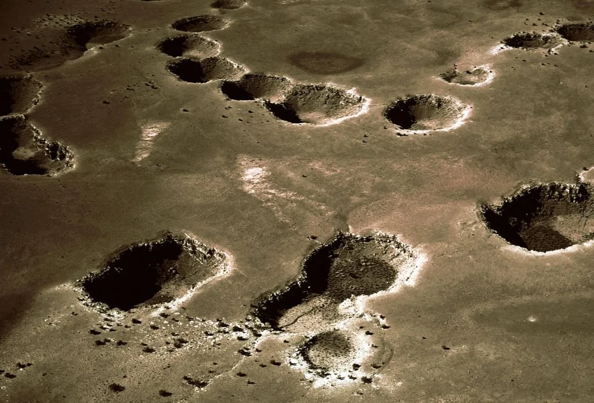
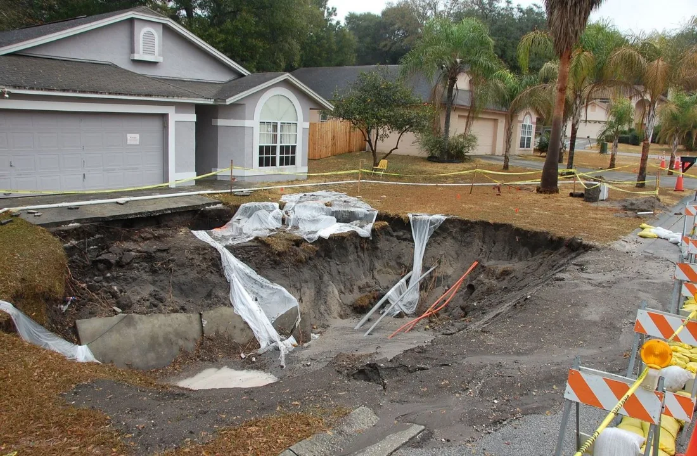

Calcit tái lắng đọng: tuf vôi, travertin và thạch nhũ
Sau khi nước axit hòa tan calcit, sự thay đổi nhiệt độ hoặc hàm lượng khí có thể làm nó lắng đọng calcit ở nơi khác thành hoặc , thường ở mạch nước hoặc trong hang (Hình 11.53). (speleothem) là trầm tích thứ sinh, thường là travertin, hình thành trong hang khi nước nhỏ giọt qua các khe nứt và lỗ hở và để lại calcit (Hình 11.54):
- treo từ trần hang.
- mọc lên từ nền hang.
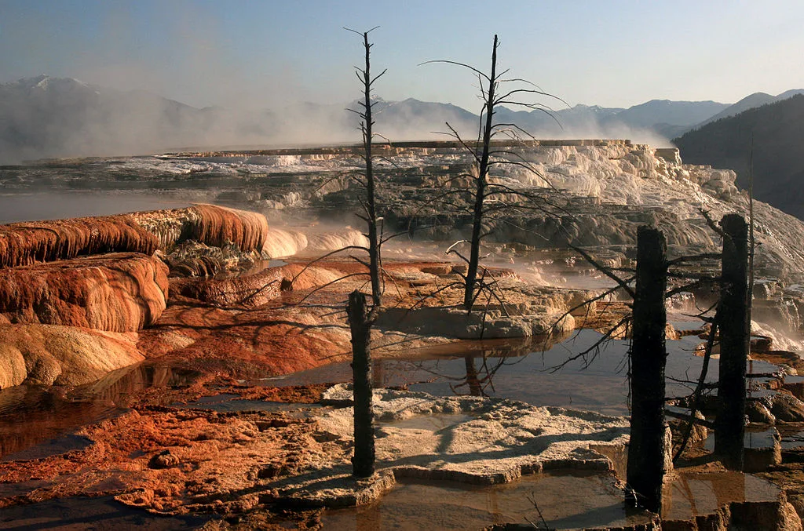

Nước đi vào và đi ra khỏi karst
Nước mặt đi vào karst qua hố sụt, sông mất nước và sông mất tích (Hình 11.55). Sự thay đổi mực cơ sở có thể khiến một dòng sông chảy trên đá vôi hòa tan đá và chìm xuống lòng đất. Khi nước tiếp tục hòa tan để đi xuyên qua, nó để lại mạng lưới hang động và lối đi hẹp, thường bằng cách nới rộng khe nứt. Nước rời hệ karst ở các mạch nước và điểm trồi. Ở vùng núi, sự hòa tan có thể xuyên suốt chiều cao của ngọn núi, với các hang sâu hàng nghìn foot.

Tự kiểm tra: Câu hỏi Mục 11.8 trong giáo trình ↗
Tóm tắt
Nước thiết yếu cho mọi sinh vật. Nó tuần hoàn liên tục qua khí quyển, trên mặt đất và trong lòng đất. Ở Hoa Kỳ và nơi khác, nước được quản lý bằng luật lệ và quy định của từng vùng, và được phân chia trên giấy dưới dạng quyền sử dụng nước. Nước mặt đi theo một lưu vực, ngăn cách với lưu vực khác bằng các đường phân thủy (sống núi cao). Dòng chảy xâm thực ở đầu nguồn, vận chuyển trầm tích qua bãi bồi và lắng đọng ở châu thổ, tạo nên địa hình từ doi cát bờ lồi đến thềm sông. Nước dưới đất lấp đầy lỗ rỗng trong đá và trầm tích, và di chuyển chủ yếu do chênh lệch áp suất và trọng lực. Các nguyên nhân do con người và tự nhiên có thể làm nước không còn uống được, và nước có thể được làm sạch bằng phương pháp sinh học, hóa học hoặc vật lý. Nơi nước hòa tan đá vôi, nó tạo nên karst với hang động và hố sụt.
Ôn nhanh
- Vòng tuần hoàn nước: bay hơi + thoát hơi nước → ngưng tụ → giáng thủy → dòng chảy mặt hoặc thấm.
- Lưu vực được giới hạn bởi đường phân thủy; lòng chảo nội lục (lưu vực kín) kết thúc bằng bay hơi.
- Nước ngọt: 68,7% là băng, 30,1% là nước dưới đất, sông chỉ 0,006%.
- Quyền sử dụng nước: do tiểu bang quản lý; chiếm dụng trước = đến trước, được quyền trước; Hiệp ước sông Colorado (1922) đã phân bổ quá mức nước sông.
- Q = V × A. Vận tốc lớn nhất ở giữa sát mặt nước, hoặc ở phía ngoài khúc uốn.
- Các đới: sinh (đầu nguồn) → vận chuyển (bãi bồi) → lắng đọng (châu thổ). Mực cơ sở: mực nước biển là mực cơ sở tối hậu.
- Tải: tải đáy (nhảy cóc, lăn kéo), lơ lửng, hòa tan.
- Bờ lở bị xâm thực, doi cát bờ lồi được bồi; cắt khúc uốn → hồ móng ngựa → vết khúc uốn cổ.
- Tầng chứa nước = rỗng + thấm (+ uống được). Đới thông khí → viền mao dẫn → mực nước ngầm → đới bão hòa.
- Darcy: Q = K A Δh/L. Bơm nước tạo phễu hạ thấp mực nước; khai thác quá mức gây sụt lún.
- Chất ô nhiễm: hữu cơ, vô cơ, sinh học. Xử lý: sinh học, hóa học, vật lý.
- Karst: acid carbonic hòa tan calcit → hố sụt, hang động, thạch nhũ, sông mất tích, tháp đá.
Tự kiểm tra: Câu hỏi ôn tập Chương 11 trong giáo trình ↗
Tài liệu tham khảo
Ghi chú kiểm chứng
Mọi dữ kiện trong đề cương đều lấy từ Chương 11. Các ghi chú này đánh dấu chỗ chương có lỗi, lỗi đánh máy, trình bày đơn giản hóa, hoặc khác với các nguồn đáng tin cậy khác. Khi chương sai, đề cương sửa lại và ghi nguyên văn của chương ở đây (giữ tiếng Anh, kèm bản dịch).
| Chương viết | Kiểm chứng |
|---|---|
| "The channels for losing streams lie below the water table, thus losing streams lose water to the water table." (Lòng dẫn của sông mất nước nằm thấp hơn mực nước ngầm, do đó sông mất nước cho mực nước ngầm.) | Đã sửa trong đề cương. Lòng dẫn của sông mất nước nằm cao hơn mực nước ngầm, nên nước thấm xuống từ đó; lòng dẫn thấp hơn mực nước ngầm sẽ nhận nước (USGS Water Science School; Heath, 1983, một tài liệu tham khảo của chương). |
| Lượng giáng thủy trung bình toàn bang Nevada là 31 cm (12,2 in) mỗi năm. | Văn phòng Khí hậu bang Nevada (Đại học Nevada, Reno) cho khoảng 10,3 in (26 cm) giai đoạn 1901–2000. Cả hai đều cho rằng Nevada là bang khô hạn nhất. |
| Love Canal: 1942–1952; "21,337 mt (21,000 t)"; đất bán cho "New York School Board". | USGS (bản tóm tắt CERC) ghi việc đổ thải từ 1942 đến 1953, "over 21,000 tons" (hơn 21.000 tấn), và cho biết khu đất được chuyển nhượng cho Niagara Falls Board of Education (Hội đồng Giáo dục Niagara Falls) năm 1953. Con số theo hệ mét trong chương ứng với 21.000 tấn dài (long ton), không phải tấn ngắn; đề cương ghi "khoảng 21.000 tấn". |
| Thung lũng Snake: "negotiations have not yet been settled" (các cuộc đàm phán vẫn chưa ngã ngũ). | Đã lỗi thời. Tháng 5 năm 2020, Cơ quan Cấp nước Nam Nevada rút các hồ sơ xin khai thác nước dưới đất đang chờ xét và hoãn dự án đường ống vô thời hạn (Las Vegas Sun, 21/5/2020). |
| "Alluvial fan in Iraq seen by NASA satellite." (Nón phóng vật ở Iraq nhìn từ vệ tinh NASA.) | Tệp ảnh trong phần ghi nguồn hình của chương có tên "Alluvial_fan_in_Iran", nên nón phóng vật này nhiều khả năng ở Iran. |
| Thạch nhũ hình thành do nước nhỏ giọt vào hang "and evaporating" (và bay hơi). | Đơn giản hóa. Trong phần lớn hang, calcit lắng đọng chủ yếu vì nước nhỏ giọt giải phóng (thoát khí) CO₂ vào không khí trong hang; bay hơi chỉ đóng vai trò nhỏ, trừ gần cửa hang (Earle, Physical Geology, CC BY). Chính đoạn về karst của chương cũng nói thay đổi "gas content" (hàm lượng khí) làm calcit tái lắng đọng. |
| "tufa (travertine)" được dùng như một vật liệu. | Bảng thuật ngữ của giáo trình phân biệt hai loại: tuf vôi hình thành trong nước tương đối không nóng, travertin thường hình thành trong nước nóng ở mạch nước và trong hang. Đề cương nêu cả hai. |
| Thực vật thải hơi nước "as a byproduct of photosynthesis called transpiration" (như một sản phẩm phụ của quang hợp gọi là thoát hơi nước). | Đơn giản hóa: thoát hơi nước là sự bay hơi nước qua lỗ khí trên lá, các lỗ này mở ra để lấy CO₂ cho quang hợp. Nó gắn với quang hợp nhưng không phải sản phẩm hóa học của quang hợp. |
| Định luật Darcy: "Δh = change in pressure head" (Δh = chênh lệch cột áp). | Nói chặt chẽ, Δh là chênh lệch cột nước thủy lực (cột cao độ cộng cột áp). Với ống nằm ngang ở Hình 11.44, hai đại lượng này như nhau. |
| Viền mao dẫn "below the vadose zone" (nằm dưới đới thông khí). | Nhiều nguồn (ví dụ USGS) xếp viền mao dẫn là phần thấp nhất của đới thông khí (chưa bão hòa), vì nước trong đó có áp suất nhỏ hơn áp suất khí quyển. Đề cương giữ thứ tự của chương. |
| Dòng chảy sông Colorado "no longer reaches the Pacific Ocean" (không còn chảy đến Thái Bình Dương). | Điểm cuối tự nhiên của sông là vịnh California, một nhánh của Thái Bình Dương. Từ thập niên 1960, sông hiếm khi chảy tới vịnh (USBR). Đề cương ghi "biển". |
| Lưu lượng sông Amazon khoảng 175.565 m³/s (6.200.000 cfs), theo một lần đo của USGS năm 1967. | Các ước tính dài hạn hiện đại cao hơn, khoảng 209.000 m³/s. Đề cương giữ con số của chương. |
| Động đất Madison Canyon (hồ Hebgen) năm 1959, cường độ 7,5. | Như ở Học phần 10: USGS ghi M7,3; Đại học Utah ghi 7,5. |
| Đơn vị lưu lượng: chương lặp lại "Therefore, the units of discharge are..." hai lần và ghi A bằng "in² or ft²". | Lỗi biên tập. Đề cương dùng m³/s và ft³/s (cfs). |
| Cửa sổ thuật ngữ bật lên cho "precipitation", "reservoir", "grade", "graded", "saltation" và "suspended load". | Các mục trong bảng thuật ngữ của giáo trình mô tả nghĩa khác (kết tủa hóa học, bể chứa dầu khí, cấp biến chất, phân lớp phân bậc, sự nhảy cóc do gió) hoặc không rõ ràng. Bảng thuật ngữ của đề cương định nghĩa chúng theo nghĩa dùng trong chương này. |
| Tên các vòng hoàn lưu, kiểu châu thổ do sông chi phối, các mốc năm của sông Colorado (1936, 1944, 1966), số liệu sụt lún ở Mendota và bảng chất ô nhiễm của USGS. | Không có trong văn bản của chương; được bổ sung từ các nguồn nêu tại chỗ. |
Nguồn & trích dẫn
Nội dung tóm tắt từ An Introduction to Geology, Chương 11, © 2017 Chris Johnson, Matthew D. Affolter, Paul Inkenbrandt và Cam Mosher, giấy phép CC BY-NC-SA 4.0. Mọi ảnh và hình vẽ lấy từ chương đều được ghi nguồn trong chú thích, với giấy phép theo phần ghi nguồn hình ảnh của chương. Bản dịch tiếng Việt do đề cương này thực hiện.
- Ba ảnh của Paul Inkenbrandt trong Chương 11 được ghi "All Rights Reserved" (bảo lưu mọi quyền) nên không được dùng: khúc uốn khoét sâu của sông Colorado gần Page, Arizona (ảnh mở đầu chương), châu thổ hồ Quake và các thềm sông Snake trong Vườn quốc gia Grand Teton.
- Vẽ cho đề cương này theo mô tả của chương: hoàn lưu toàn cầu (Hình 11.9), biểu đồ nước ngọt (Hình 11.11), máy tính lưu lượng (Hình 11.12), các đới của dòng chảy (Hình 11.15), hoạt hình tải trầm tích (Hình 11.16), đê tự nhiên (Hình 11.17), từ khúc uốn đến hồ móng ngựa (Hình 11.25), thềm sông (Hình 11.37), không gian lỗ rỗng (Hình 11.39), các đới nước dưới đất (Hình 11.40), sông nhận nước và sông mất nước (Hình 11.42), máy tính Darcy (trong Hình 11.44) và karst (Hình 11.49).
- Các nguồn ngoài được nêu tại nơi sử dụng: USGS (Water Science School; Circular 1182; bản tóm tắt CERC về Love Canal), U.S. Bureau of Reclamation, Văn phòng Khí hậu bang Nevada, Las Vegas Sun, Freeze và Cherry (1979), và Steven Earle, Physical Geology (BCcampus, CC BY).
- Thuật ngữ tiếng Việt: các thuật ngữ đối chiếu được với Wikipedia tiếng Việt được dùng nguyên; những thuật ngữ chưa tìm thấy trong nguồn chính thức được ghi chú trong bảng thuật ngữ.